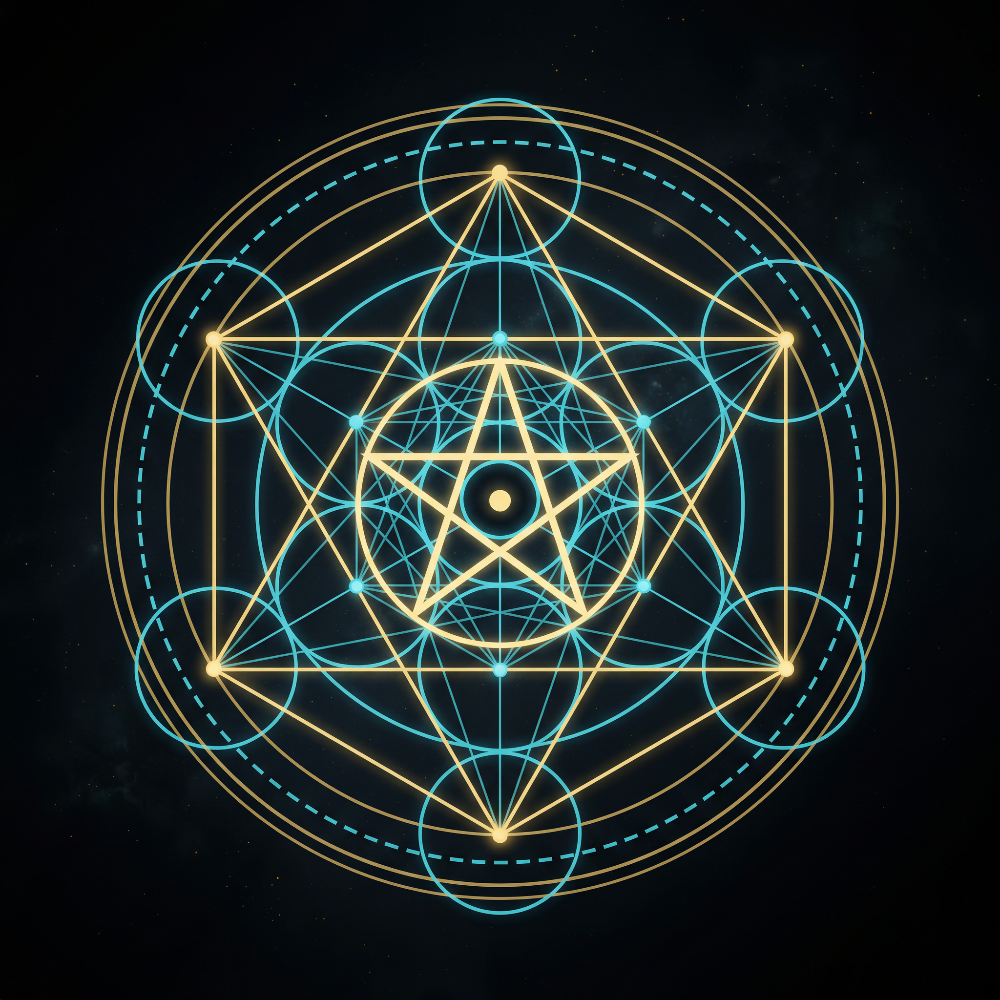

Los Tres Pilares del Árbol
⚡
Pilar Derecho
Misericordia
Chokmah · Chesed · Netzach
Fuerza activa, expansión, gracia vital.
⚖️
Pilar Central
Equilibrio
Kether · Tiphareth · Yesod · Malkuth
Eje de síntesis: origen a manifestación.
🗡️
Pilar Izquierdo
Rigor
Binah · Geburah · Hod
Límite, corte, justicia y forma analítica.
Síntesis Numérica: 149 (3+1)
149 → 1+4+9 = 14 → 1+4 = 5 pilares × 72 sellos = 360° (el círculo completo del Codex).
Tres consonantes raíz + un sufijo divino (-Yah o -El) = arquitectura del nombre angélico.
22 senderos + 10 Sefirot = 32 vías de la sabiduría.
Imagen del Sistema

Cubo de Metatrón · Base geométrica del Codex 149